<!DOCTYPE lake>
<h1 data-lake-id="II0iF" id="II0iF"><span data-lake-id="u10f5ad99" id="u10f5ad99">学习目标</span></h1><ul list="uada79502"><li data-lake-id="u57f8a718" fid="u686325bb" id="u57f8a718"><span data-lake-id="u6a371080" id="u6a371080">了解mos管的使用</span></li><li data-lake-id="u974fad68" fid="u686325bb" id="u974fad68"><span data-lake-id="u66303bc0" id="u66303bc0">了解GPIO输出模式</span></li><li data-lake-id="udde4ea2f" fid="u686325bb" id="udde4ea2f"><span data-lake-id="udb567dce" id="udb567dce">了解GPIO输入模式</span></li><li data-lake-id="u33afd9cd" fid="u686325bb" id="u33afd9cd"><span data-lake-id="u87e17c02" id="u87e17c02">理解ARM系列GPIO相关理论</span></li><li data-lake-id="u71b85b13" fid="u686325bb" id="u71b85b13"><span data-lake-id="u817e8c70" id="u817e8c70">掌握GD32几种GPIO工作模式编码实现</span></li></ul><h1 data-lake-id="PInI2" id="PInI2"><span data-lake-id="ua41fffcf" id="ua41fffcf">学习内容</span></h1><h2 data-lake-id="Izyh9" id="Izyh9"><span data-lake-id="u213df89f" id="u213df89f">基础概念</span></h2><p data-lake-id="u4deec767" id="u4deec767"><span data-lake-id="uddb83bb7" id="uddb83bb7">GPIO，全称为“通用输入/输出”（General Purpose Input/Output），是计算机系统中用于与外部世界进行数字通信的一种接口标准。它允许硬件和软件通过电信号来交换数据，控制外部设备或接收外部事件。GPIO通常用于连接各种外设，如按钮、LED灯、传感器、马达、继电器等，以便与计算机系统进行交互。</span></p><p data-lake-id="ud50f8f80" id="ud50f8f80">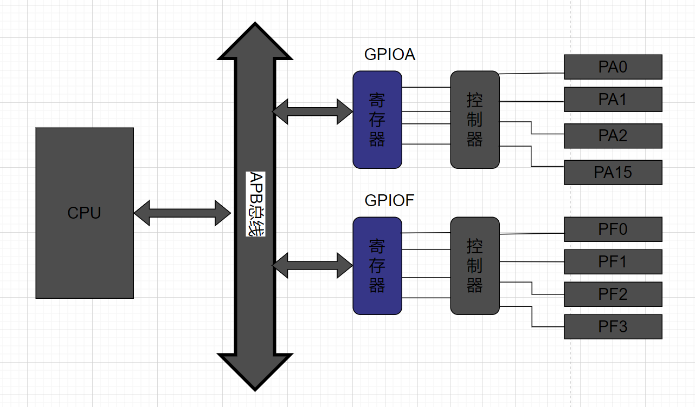</p><p data-lake-id="u65e6dcb5" id="u65e6dcb5"><span data-lake-id="u9d79034f" id="u9d79034f">GPIO具备一些特性：</span></p><ol list="u99c5dcb4"><li data-lake-id="u1bad7d97" fid="uda44b6ab" id="u1bad7d97"><span data-lake-id="ued69213d" id="ued69213d">通用性：GPIO是通用的，意味着它们可以在不同类型的硬件平台上使用，而不必修改底层电路。这种通用性使得开发人员能够设计和编写与硬件无关的代码，实现跨平台的应用。</span></li><li data-lake-id="uad7f0f04" fid="uda44b6ab" id="uad7f0f04"><span data-lake-id="u2714de36" id="u2714de36">输入和输出：每个GPIO引脚都可以被配置为输入或输出。当配置为输入时，引脚用于接收外部信号，例如按钮状态或传感器读数。当配置为输出时，引脚用于控制外部设备，例如点亮LED或控制马达运动。</span></li><li data-lake-id="uf1c41c17" fid="uda44b6ab" id="uf1c41c17"><span data-lake-id="u7c3bfeea" id="u7c3bfeea">数字信号：GPIO是数字信号接口，这意味着它们只能传输二进制值（0和1）。通过在引脚之间切换电压，可以传递这些数字值，从而实现数据传输和通信。</span></li><li data-lake-id="u6800a7ef" fid="uda44b6ab" id="u6800a7ef"><span data-lake-id="ufc4b158c" id="ufc4b158c">控制：操作系统或应用程序可以通过读取或写入GPIO引脚来控制外部设备。通过设置输出引脚的电平（高电平或低电平），可以打开或关闭连接的设备。</span></li><li data-lake-id="ub47e0a54" fid="uda44b6ab" id="ub47e0a54"><span data-lake-id="ue8229df9" id="ue8229df9">事件触发：GPIO引脚可以用于检测外部事件。例如，一个传感器可能连接到GPIO引脚上，当传感器检测到特定条件时，它会改变引脚的状态，从而触发系统中的相应操作。</span></li><li data-lake-id="u7837bb61" fid="uda44b6ab" id="u7837bb61"><span data-lake-id="u24bd64ff" id="u24bd64ff">引脚编号：每个GPIO引脚都有一个唯一的编号，通常用数字或字母和数字的组合来表示。在不同的硬件平台上，引脚编号可能会有所不同。</span></li><li data-lake-id="u407ff568" fid="uda44b6ab" id="u407ff568"><span data-lake-id="u4f5cb304" id="u4f5cb304">驱动程序和库：为了在操作系统中使用GPIO，通常需要适当的驱动程序或库。这些驱动程序或库可以帮助应用程序与硬件进行交互，读取和写入GPIO引脚的状态。</span></li></ol><p data-lake-id="u7c7b3fcd" id="u7c7b3fcd"><br/></p><h2 data-lake-id="VtVxt" id="VtVxt"><span data-lake-id="u857dc6ef" id="u857dc6ef">背景知识</span></h2><h3 data-lake-id="G9J8n" id="G9J8n"><span data-lake-id="uc6030160" id="uc6030160">三极管</span></h3><p data-lake-id="u2ae2f534" id="u2ae2f534">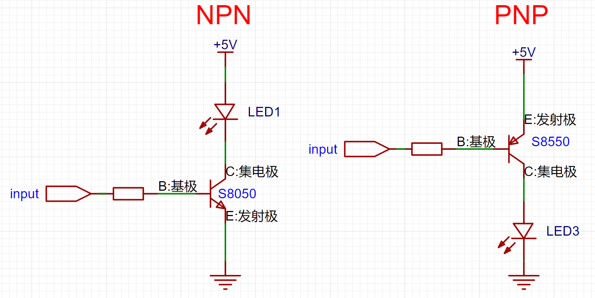</p><p data-lake-id="ub4e8e136" id="ub4e8e136"><span data-lake-id="u041c1f0b" id="u041c1f0b">电流关系:</span></p><p data-lake-id="u9d2554b8" id="u9d2554b8"><a class="yuque-card-link" href="https://cdn.nlark.com/yuque/__latex/f522bfbb0195d1ec4674385ec3dad9ff.svg" rel="noopener noreferrer" target="_blank">math：math</a></p><p data-lake-id="u10ee9a9d" id="u10ee9a9d"><span data-lake-id="ufc9b3325" id="ufc9b3325">导通条件:</span></p><p data-lake-id="ub4421e3d" id="ub4421e3d"><span data-lake-id="u6b3959e2" id="u6b3959e2">NPN:基极比发射极电压高0.7v  (高电平导通, 低电平断开/截止)</span></p><p data-lake-id="u03418b89" id="u03418b89"><span data-lake-id="ufb2358be" id="ufb2358be">PNP:基极比发射极电压低0.7v   (低电平导通, 高电平断开/截止)</span></p><p data-lake-id="u354265fa" id="u354265fa"><span data-lake-id="u53f1ea6b" id="u53f1ea6b">设计原理图:</span></p><p data-lake-id="u79efcff2" id="u79efcff2"><span data-lake-id="uf3d50894" id="uf3d50894">NPN:耗电元器件,需要接在集电极</span></p><p data-lake-id="u8b1ae25b" id="u8b1ae25b"><span data-lake-id="u0338f5f0" id="u0338f5f0">PNP:耗电元器件,需要接在集电极</span></p><p data-lake-id="ua118f4f0" id="ua118f4f0"><span data-lake-id="u4bd2ee01" id="u4bd2ee01">​</span><br/></p><table class="lake-table" data-lake-id="WvYZn" id="WvYZn" margin="true" style="width: 610px"><colgroup><col width="110"/><col width="250"/><col width="250"/></colgroup><tbody><tr data-lake-id="ub8028099" id="ub8028099"><td data-lake-id="ucc54ed9d" id="ucc54ed9d"><p data-lake-id="ub910c254" id="ub910c254"><strong><span class="lake-fontsize-12" data-lake-id="u54ece828" id="u54ece828" style="color: rgb(15, 17, 21)">发射极</span></strong></p></td><td data-lake-id="ufd113550" id="ufd113550"><p data-lake-id="u809f27c9" id="u809f27c9"><strong><span class="lake-fontsize-12" data-lake-id="u3fa4d265" id="u3fa4d265" style="color: rgb(15, 17, 21)">Emitter</span></strong></p></td><td data-lake-id="uce4c6baf" id="uce4c6baf"><p data-lake-id="u2730d61c" id="u2730d61c"><strong><span class="lake-fontsize-12" data-lake-id="ua665f7ec" id="ua665f7ec" style="color: rgb(15, 17, 21)">E</span></strong></p></td></tr><tr data-lake-id="ue5c5a2a1" id="ue5c5a2a1"><td data-lake-id="ue4fa3027" id="ue4fa3027"><p data-lake-id="ue2caacef" id="ue2caacef"><strong><span class="lake-fontsize-12" data-lake-id="ud586368f" id="ud586368f" style="color: rgb(15, 17, 21)">基极</span></strong></p></td><td data-lake-id="uf611492b" id="uf611492b"><p data-lake-id="u1f100c24" id="u1f100c24"><strong><span class="lake-fontsize-12" data-lake-id="u72870ce4" id="u72870ce4" style="color: rgb(15, 17, 21)">Base</span></strong></p></td><td data-lake-id="uc57c46e4" id="uc57c46e4"><p data-lake-id="u0676ea48" id="u0676ea48"><strong><span class="lake-fontsize-12" data-lake-id="ub7a6be32" id="ub7a6be32" style="color: rgb(15, 17, 21)">B</span></strong></p></td></tr><tr data-lake-id="uc4fcb99c" id="uc4fcb99c"><td data-lake-id="uc0df8a81" id="uc0df8a81"><p data-lake-id="ue8d024cd" id="ue8d024cd"><strong><span class="lake-fontsize-12" data-lake-id="uc735257c" id="uc735257c" style="color: rgb(15, 17, 21)">集电极</span></strong></p></td><td data-lake-id="u6d1c9386" id="u6d1c9386"><p data-lake-id="u35c77c02" id="u35c77c02"><strong><span class="lake-fontsize-12" data-lake-id="uf00b6c26" id="uf00b6c26" style="color: rgb(15, 17, 21)">Collector</span></strong></p></td><td data-lake-id="udf3e4ba9" id="udf3e4ba9"><p data-lake-id="u9aea013c" id="u9aea013c"><strong><span class="lake-fontsize-12" data-lake-id="u566b6011" id="u566b6011" style="color: rgb(15, 17, 21)">C</span></strong></p></td></tr></tbody></table><h3 data-lake-id="UAJmv" id="UAJmv"><span data-lake-id="u663b79c0" id="u663b79c0">MOS管</span></h3><p data-lake-id="u4d6997d6" id="u4d6997d6"><span data-lake-id="u7f2e86f4" id="u7f2e86f4">MOS管有NMOS和PMOS两种类型。MOS管包含了三个极：</span></p><ul list="ub8a237d1"><li data-lake-id="u5b0e4796" fid="u0b16c0b7" id="u5b0e4796"><span data-lake-id="ua0cbd80e" id="ua0cbd80e">gate：栅极，缩写G</span></li><li data-lake-id="u3a82bd53" fid="u0b16c0b7" id="u3a82bd53"><span data-lake-id="ubf9f548a" id="ubf9f548a">drain：漏极，缩写D</span></li><li data-lake-id="ub0c343d6" fid="u0b16c0b7" id="ub0c343d6"><span data-lake-id="u9c9faa18" id="u9c9faa18">source：源极，缩写S</span></li></ul><p data-lake-id="u3c1f45f9" id="u3c1f45f9"><span data-lake-id="uf09c85fd" id="uf09c85fd">MOS管的作用就是开关，通过栅极控制漏极和源极的导通。</span></p><p data-lake-id="u6cea73cb" id="u6cea73cb"><br/></p><p data-lake-id="u20af82f4" id="u20af82f4"><span data-lake-id="u49ba900b" id="u49ba900b">MOS管主要关注两个点：</span></p><ol list="u02d79d8c"><li data-lake-id="u303e6d0d" fid="u75e0eed0" id="u303e6d0d"><span data-lake-id="u350cc1cf" id="u350cc1cf">控制：负责MOS管导通和截止，高电平导通还是低电平导通。</span></li><li data-lake-id="u2cc1abaf" fid="u75e0eed0" id="u2cc1abaf"><span data-lake-id="ue11bb12a" id="ue11bb12a">流向：是从漏极流向源极，还是从源极流向漏极。</span></li></ol><p data-lake-id="u2a3ba96c" id="u2a3ba96c"><span data-lake-id="u810eee0d" id="u810eee0d">​</span><br/></p><p data-lake-id="ua0f2c3e4" id="ua0f2c3e4"><strong><span data-lake-id="u428d6a34" id="u428d6a34">MOS管和三级管区别:</span></strong></p><p data-lake-id="u154a3227" id="u154a3227"><span data-lake-id="u700479c0" id="u700479c0">三极管导通(基极)有电流</span></p><p data-lake-id="u93275464" id="u93275464"><span data-lake-id="u94f87d09" id="u94f87d09">MOS管导通(栅极)没有电流</span></p><p data-lake-id="u5a8accac" id="u5a8accac"><br/></p><h3 data-lake-id="loq0w" id="loq0w"><span data-lake-id="u0b34fbf9" id="u0b34fbf9">NMOS （N沟道）</span></h3><p data-lake-id="u9f9145b7" id="u9f9145b7">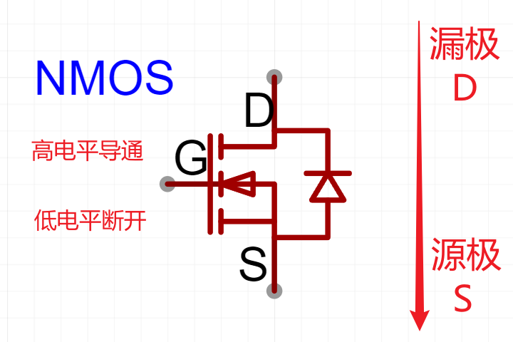</p><p data-lake-id="ud60d509a" id="ud60d509a"><span data-lake-id="uc2ae8cbf" id="uc2ae8cbf">特点：</span></p><ol list="u6546c681"><li data-lake-id="u17b79793" fid="ua2d4e36c" id="u17b79793"><span data-lake-id="u1bf5dafb" id="u1bf5dafb">给栅极输入高电平，mos管导通；</span></li><li data-lake-id="u1fa2bb5d" fid="ua2d4e36c" id="u1fa2bb5d"><span data-lake-id="u02e4416d" id="u02e4416d">给栅极输入低电平，mos管断开；</span></li><li data-lake-id="ube20ce8b" fid="ua2d4e36c" id="ube20ce8b"><span data-lake-id="u17e06c94" id="u17e06c94">导通时，方向是由漏极到源极；</span></li><li data-lake-id="u3c833e6c" fid="ua2d4e36c" id="u3c833e6c"><span data-lake-id="u6183f5ef" id="u6183f5ef">电平通断类似于三极管的NPN</span></li></ol><p data-lake-id="u3b4cddb3" id="u3b4cddb3"><br/></p><p data-lake-id="u192c7e57" id="u192c7e57"><span data-lake-id="u0e349f45" id="u0e349f45">通常NMOS的使用示例：</span></p><p data-lake-id="udd8d8e6d" id="udd8d8e6d">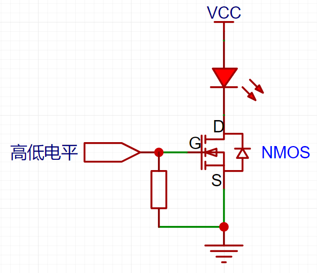</p><p data-lake-id="u0060366f" id="u0060366f"><span data-lake-id="u4ae3d240" id="u4ae3d240">注意：</span></p><ol list="ue26a941c"><li data-lake-id="uf0ca595e" fid="u9512df74" id="uf0ca595e"><span data-lake-id="ud00b2b19" id="ud00b2b19">NMOS需要</span><strong><span data-lake-id="uc1cd52b6" id="uc1cd52b6">下拉电阻</span></strong><span data-lake-id="u0ef49ceb" id="u0ef49ceb">；</span></li><li data-lake-id="ud72d8299" fid="u9512df74" id="ud72d8299"><span data-lake-id="u4507c292" id="u4507c292">NMOS的开关线路上的消耗物必须放到</span><strong><span data-lake-id="u45d229bb" id="u45d229bb">漏极侧</span></strong><span data-lake-id="u460ddfaa" id="u460ddfaa">；</span></li></ol><p data-lake-id="u25538894" id="u25538894"><span data-lake-id="ucb24ab79" id="ucb24ab79">​</span><br/></p><h3 data-lake-id="DtWba" id="DtWba"><span data-lake-id="u96aac55f" id="u96aac55f">PMOS（P沟道）</span></h3><p data-lake-id="u82582f5a" id="u82582f5a">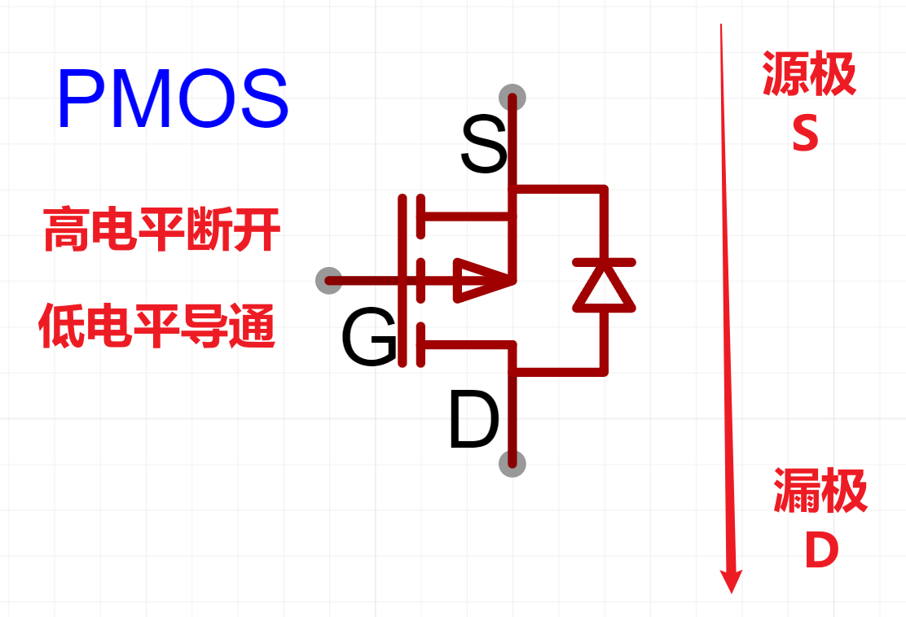</p><p data-lake-id="uf6ec031d" id="uf6ec031d"><span data-lake-id="ue720bc34" id="ue720bc34">特点：</span></p><ol list="u1b8d0c36"><li data-lake-id="uad533259" fid="ua2d4e36c" id="uad533259"><span data-lake-id="u3d7073af" id="u3d7073af">给栅极输入高电平，mos管断开；</span></li><li data-lake-id="u17ab8e52" fid="ua2d4e36c" id="u17ab8e52"><span data-lake-id="u143429b3" id="u143429b3">给栅极输入低电平，mos管导通；</span></li><li data-lake-id="u38ef779d" fid="ua2d4e36c" id="u38ef779d"><span data-lake-id="u2dfbf2ec" id="u2dfbf2ec">导通时，方向是由源极到漏极；</span></li><li data-lake-id="u6e37380d" fid="ua2d4e36c" id="u6e37380d"><span data-lake-id="u4f9c4c5e" id="u4f9c4c5e">电平通断类似于三极管的PNP</span></li></ol><p data-lake-id="u11244de9" id="u11244de9"><br/></p><p data-lake-id="ucad741d3" id="ucad741d3">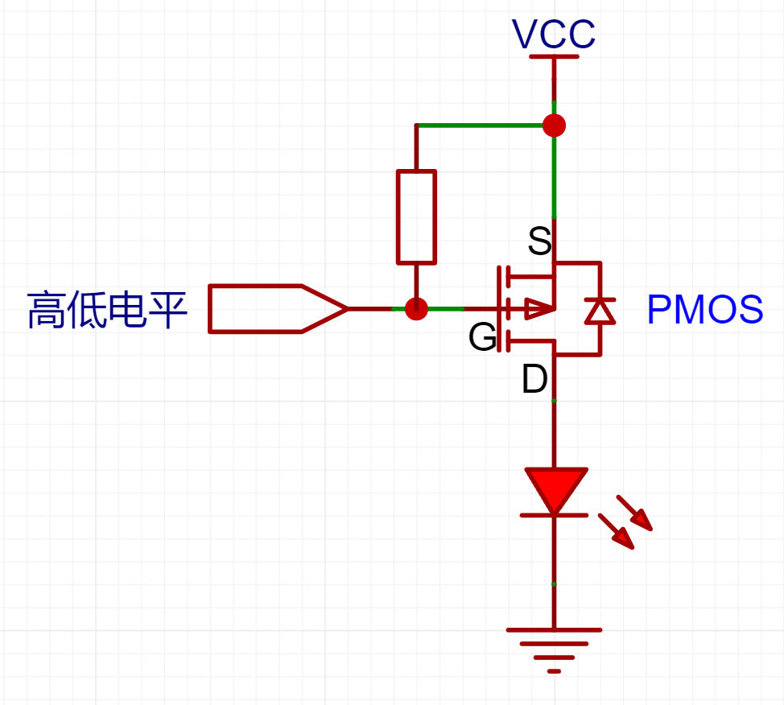</p><p data-lake-id="u3c3fc48d" id="u3c3fc48d"><span data-lake-id="uf61fca4f" id="uf61fca4f">注意：</span></p><ol list="u9bc27ebe"><li data-lake-id="u4fdb7ae9" fid="u9512df74" id="u4fdb7ae9"><span data-lake-id="ub0522257" id="ub0522257">pmos需要</span><strong><span data-lake-id="u37a02292" id="u37a02292">上拉电阻</span></strong><span data-lake-id="u7e1e790c" id="u7e1e790c">；</span></li><li data-lake-id="ue6fad176" fid="u9512df74" id="ue6fad176"><span data-lake-id="ue7cd80a3" id="ue7cd80a3">pmos的开关线路上的消耗物必须放到</span><strong><span data-lake-id="u3f2b0fe4" id="u3f2b0fe4">漏极侧</span></strong><span data-lake-id="u64130f36" id="u64130f36">；</span></li></ol><p data-lake-id="uf5de0adc" id="uf5de0adc"><span data-lake-id="uddf97a6e" id="uddf97a6e">​</span><br/></p><h2 data-lake-id="jDOPc" id="jDOPc"><span data-lake-id="ub6f93fbd" id="ub6f93fbd">GPIO三种模式</span></h2><h3 data-lake-id="evvJl" id="evvJl"><span data-lake-id="ueb829c8c" id="ueb829c8c">推挽输出</span></h3><p data-lake-id="u062eca27" id="u062eca27">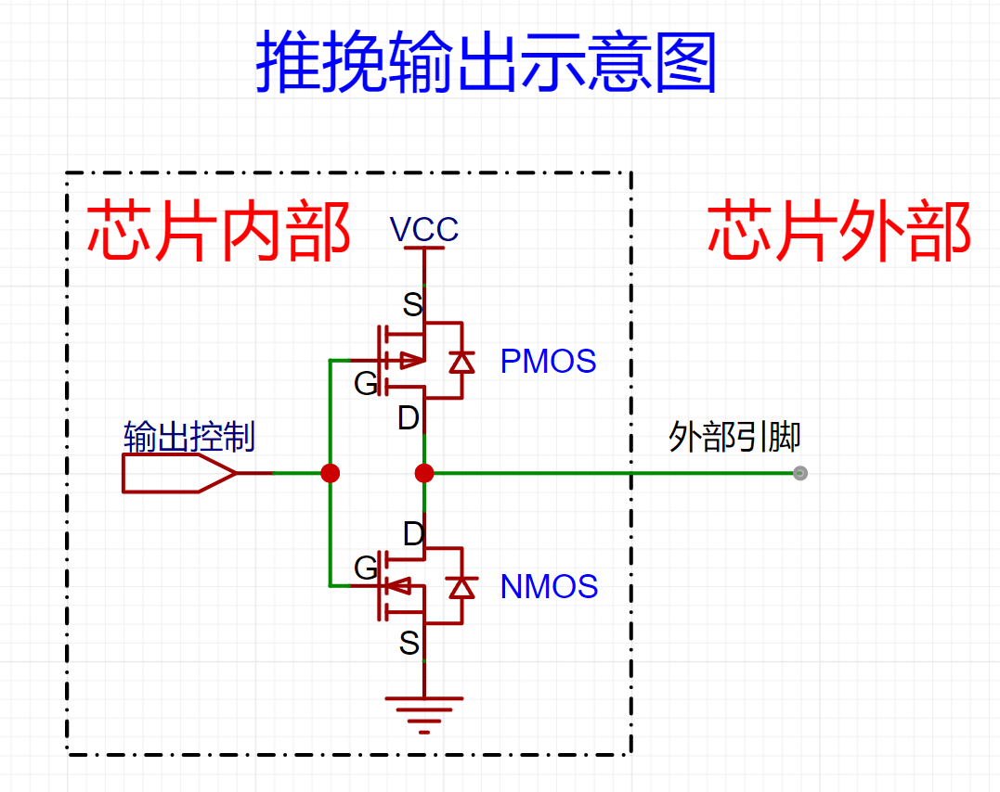</p><p data-lake-id="u70c873f7" id="u70c873f7"><span data-lake-id="u392e6bd6" id="u392e6bd6">基本的示意图如上，作为编程人员，我们更多关注的是下图：</span></p><p data-lake-id="uc7e27572" id="uc7e27572">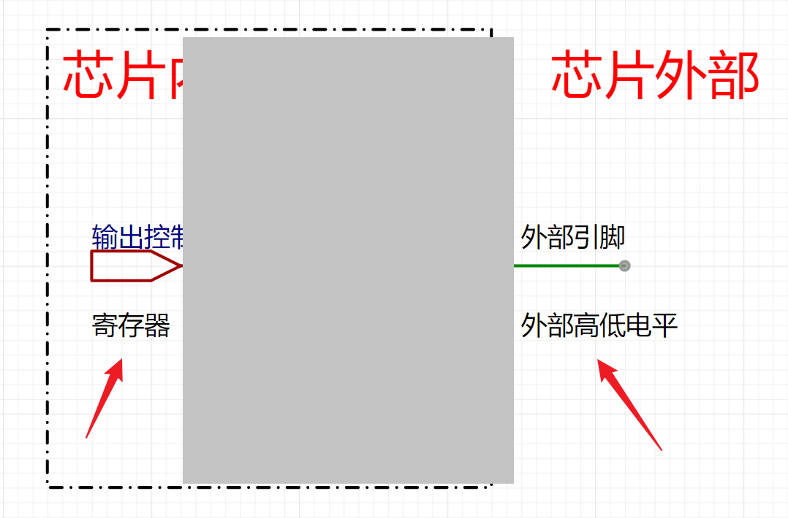</p><p data-lake-id="u86051e9e" id="u86051e9e"><span data-lake-id="ubbe985e2" id="ubbe985e2">我们希望的是，</span><strong><span data-lake-id="u0e73caa8" id="u0e73caa8">通过寄存器控制外部引脚的高低电平。</span></strong></p><ol list="u545908be"><li data-lake-id="u8f45c033" fid="u2bd6ab88" id="u8f45c033"><span data-lake-id="u08568e41" id="u08568e41">寄存器的配置高电平，外部引脚输出高电平</span></li><li data-lake-id="uddcb6399" fid="u2bd6ab88" id="uddcb6399"><span data-lake-id="u78872432" id="u78872432">寄存器的配置低电平，外部引脚输出低电平</span></li></ol><p data-lake-id="u8cfb621a" id="u8cfb621a"><br/></p><p data-lake-id="ud4e7a4d2" id="ud4e7a4d2">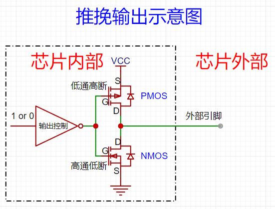</p><p data-lake-id="u5cb71c31" id="u5cb71c31"><span data-lake-id="uf34e4099" id="uf34e4099">加上外部电路，我们理解以下推挽中的</span><strong><span data-lake-id="u70adc1b7" id="u70adc1b7" style="color: #DF2A3F">推</span></strong><span data-lake-id="uc708f758" id="uc708f758">是什么：</span></p><p data-lake-id="u37bbd0e2" id="u37bbd0e2">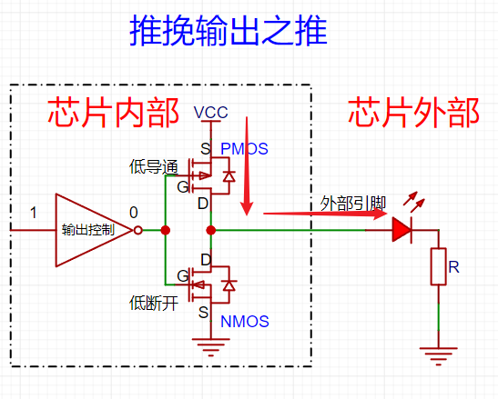</p><p data-lake-id="ufdf8890e" id="ufdf8890e"><span data-lake-id="u271783ed" id="u271783ed">推挽中的</span><strong><span data-lake-id="u80a3a9a4" id="u80a3a9a4" style="color: #DF2A3F">挽</span></strong><span data-lake-id="u74040385" id="u74040385">是什么：</span></p><p data-lake-id="u39f0ec71" id="u39f0ec71">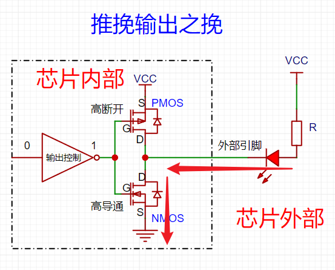</p><p data-lake-id="u95b907e1" id="u95b907e1"><span data-lake-id="u1742c338" id="u1742c338">总结，</span><strong><span data-lake-id="uc5bedaf1" id="uc5bedaf1">寄存器控制输出低电平时，外部引脚为低；寄存器控制输出高电平时，外部引脚为高</span></strong><span data-lake-id="u291423e4" id="u291423e4">。</span></p><p data-lake-id="u8d1978c8" id="u8d1978c8"><br/></p><h3 data-lake-id="dDmvt" id="dDmvt"><span data-lake-id="ua8e9e48e" id="ua8e9e48e">开漏输出</span></h3><p data-lake-id="uea82a20b" id="uea82a20b">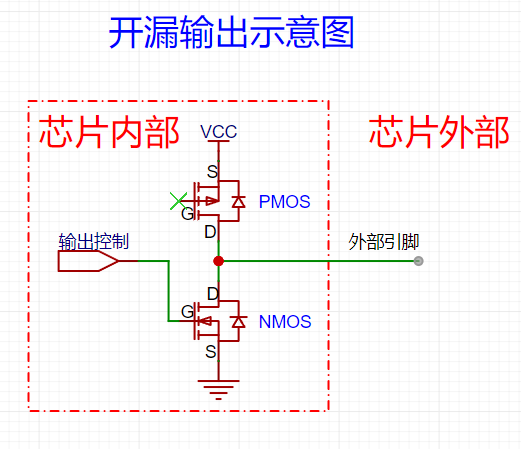</p><p data-lake-id="u0ddb72b1" id="u0ddb72b1"><span data-lake-id="u38c20f39" id="u38c20f39">基本的示意图如上，作为编程人员，我们更多关注的是下图：</span></p><p data-lake-id="u2ee51cbe" id="u2ee51cbe">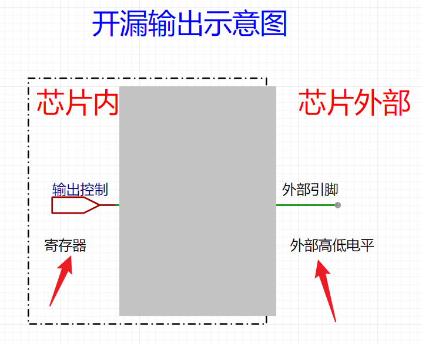</p><p data-lake-id="ua5d406b4" id="ua5d406b4"><span data-lake-id="uc5388a7f" id="uc5388a7f">我们希望的是，</span><strong><span data-lake-id="u5406c1a6" id="u5406c1a6">通过寄存器控制外部引脚的高低电平。</span></strong></p><ol list="ufc1268f6"><li data-lake-id="u750ffdb4" fid="u2bd6ab88" id="u750ffdb4"><span data-lake-id="u4ceffac4" id="u4ceffac4">寄存器的配置</span><strong><span data-lake-id="u9d10f8ff" id="u9d10f8ff">高电平</span></strong><span data-lake-id="ud55ead6d" id="ud55ead6d">，外部引脚断开。</span></li><li data-lake-id="ud9abba5b" fid="u2bd6ab88" id="ud9abba5b"><span data-lake-id="u8bbed274" id="u8bbed274">寄存器的配置</span><strong><span data-lake-id="u4cb5156a" id="u4cb5156a">低电平</span></strong><span data-lake-id="u47ea658c" id="u47ea658c">，外部引脚输出低电平。</span></li></ol><p data-lake-id="u20522baf" id="u20522baf">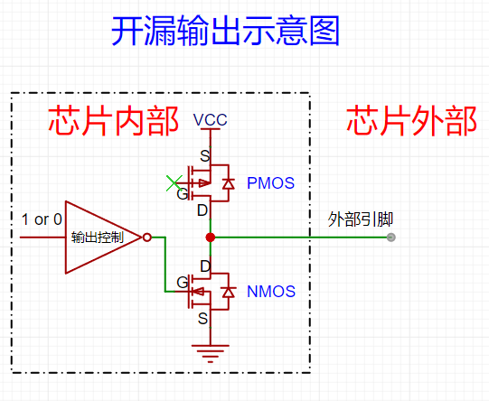</p><p data-lake-id="ue4a50375" id="ue4a50375"><span data-lake-id="u9cc96152" id="u9cc96152">加上外部电路，我们理解一下开漏输出中的开是什么：</span></p><p data-lake-id="u2b2e7bb1" id="u2b2e7bb1">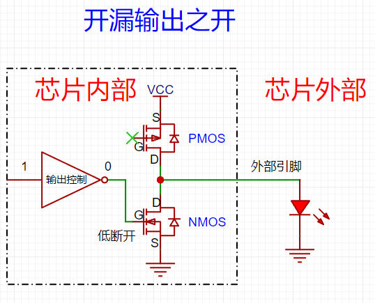</p><p data-lake-id="u564fb11e" id="u564fb11e"><span data-lake-id="u783850ae" id="u783850ae">这里存在一个问题，开漏输出时，如果给高电平，外接的灯是不会亮的，因此开漏状态下我们需要进行上拉，如下所示：</span></p><p data-lake-id="ud29b0f5e" id="ud29b0f5e">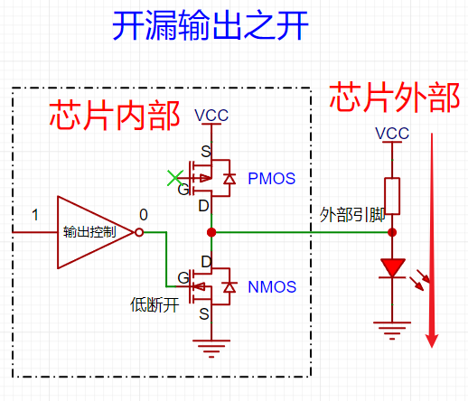</p><p data-lake-id="uf9503dc2" id="uf9503dc2"><span data-lake-id="u269d7fcf" id="u269d7fcf">我们理解一下开漏输出中的</span><strong><span data-lake-id="u0ac7633b" id="u0ac7633b" style="color: #DF2A3F">漏</span></strong><span data-lake-id="u7eef3be5" id="u7eef3be5">是什么：</span></p><p data-lake-id="uce36d131" id="uce36d131">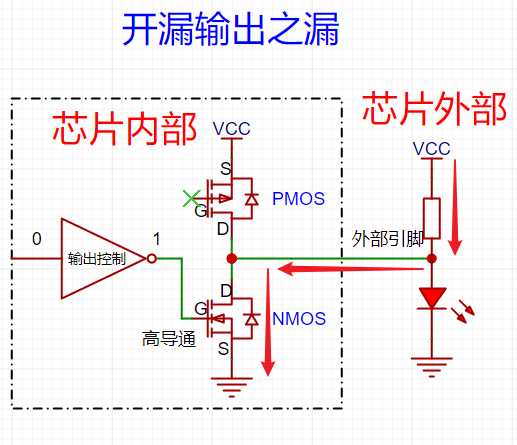</p><h3 data-lake-id="IxYCU" id="IxYCU"><span data-lake-id="u257e5c5e" id="u257e5c5e">高阻态</span></h3><p data-lake-id="u3565643f" id="u3565643f"><span data-lake-id="u6363100d" id="u6363100d">高阻态表示，不输出任何高低电平。</span></p><p data-lake-id="uac2e7760" id="uac2e7760">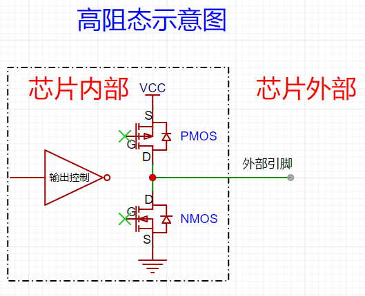</p><p data-lake-id="u0af0ed1f" id="u0af0ed1f"><span data-lake-id="ued02ee4d" id="ued02ee4d">无论寄存器输出高或者低，外部引脚始终断开。</span></p><h2 data-lake-id="sVxfX" id="sVxfX"><span data-lake-id="u0f3f88ee" id="u0f3f88ee">GPIO输出线与</span></h2><p data-lake-id="uf3911bd7" id="uf3911bd7"><span data-lake-id="u455f8f0a" id="u455f8f0a">将两个外部引脚接到一起，我们称之为线与。例如IIC协议中SDA和SCL就会同时配置OD开漏模式，并添加上拉电阻，此时就会产生线与。</span></p><h3 data-lake-id="f2KGg" id="f2KGg"><span data-lake-id="u9fa22396" id="u9fa22396">推挽线与（禁止）</span></h3><p data-lake-id="ua490f118" id="ua490f118">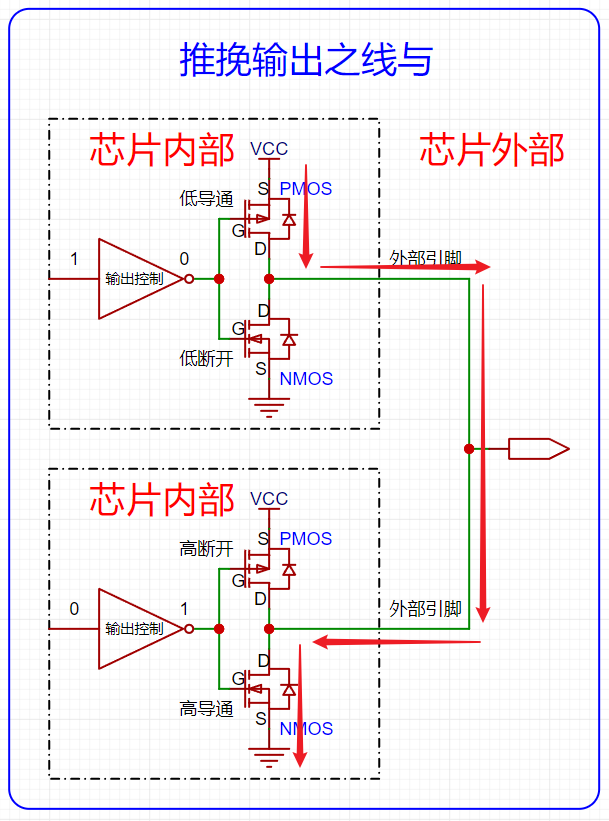</p><p data-lake-id="ua63b66b7" id="ua63b66b7"><span data-lake-id="ueff8f99a" id="ueff8f99a">推挽过程中，如果一方输出高，一方输出低，则会烧芯片。</span></p><p data-lake-id="u5b8f3319" id="u5b8f3319"><span data-lake-id="u129245ec" id="u129245ec">因此，推挽是不可以线与的。不能线与，说明不可以和其他芯片同时采用推挽这种方式连接，否则会出现问题。</span></p><h3 data-lake-id="uBCwH" id="uBCwH"><span data-lake-id="ua5bd4ffb" id="ua5bd4ffb">开漏线与</span></h3><p data-lake-id="u1496f16a" id="u1496f16a">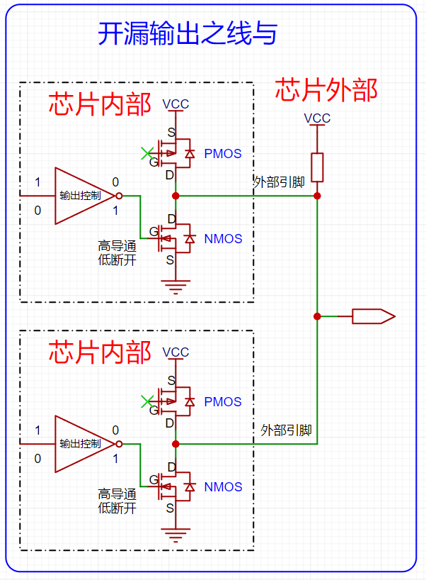</p><p data-lake-id="u69573ec6" id="u69573ec6"><span data-lake-id="u75e568f7" id="u75e568f7">开漏过程中，无论双方输出高低电平，芯片都不会收到影响。I2C就是线与的一个实例。</span></p><p data-lake-id="u1e67fcc5" id="u1e67fcc5"><span data-lake-id="ucf4c59b4" id="ucf4c59b4">​</span><br/></p><h2 data-lake-id="lpgq9" id="lpgq9"><span data-lake-id="uc4312856" id="uc4312856">GPIO输入模式</span></h2><p data-lake-id="u89db4126" id="u89db4126">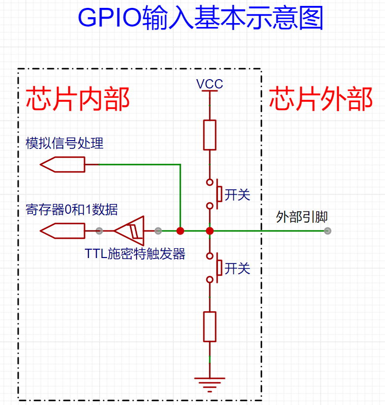</p><p data-lake-id="udcd2aa84" id="udcd2aa84"><span data-lake-id="ub757154b" id="ub757154b">上图为GPIO输入的基本示意图，其中包含了上拉电路，下拉电路，模拟信号处理，数字逻辑信号接收。</span></p><p data-lake-id="u470bb22a" id="u470bb22a"><span data-lake-id="uad9c4ec8" id="uad9c4ec8">​</span><br/></p><p data-lake-id="ue280e994" id="ue280e994"><span data-lake-id="uccb64d3a" id="uccb64d3a">TTL（Transistor-Transistor Logic）施密特触发器是一种数字电路元件，常用于去除输入信号的噪声和抖动，并提供稳定的输出信号（通过</span><strong><span data-lake-id="u7c013693" id="u7c013693" style="color: #DF2A3F">双阈值比较器</span></strong><span data-lake-id="u6011c19b" id="u6011c19b">）。它的作用在于消除输入信号的不稳定性，确保在输入信号发生变化时，输出信号能够产生可靠的、干净的转换。</span></p><blockquote data-lake-id="ufbf8db87" id="ufbf8db87"><p data-lake-id="u39bdd6f5" id="u39bdd6f5"><span data-lake-id="udc8f5876" id="udc8f5876">TTL施密特触发器的主要作用有以下几个方面：</span></p><ol list="u4b119f7d"><li data-lake-id="ua70d255a" fid="u0361a77f" id="ua70d255a"><strong><span data-lake-id="u1bf5ae53" id="u1bf5ae53">消除噪声和抖动</span></strong><span data-lake-id="uee740803" id="uee740803">：在数字电路中，输入信号可能受到噪声的干扰或产生抖动（快速的信号变化）。这可能导致触发器在边沿变化时产生不稳定的输出。TTL施密特触发器使用了一个</span><strong><span data-lake-id="uce5b4ee6" id="uce5b4ee6" style="color: #DF2A3F">双阈值比较器</span></strong><span data-lake-id="u2bcc1dcb" id="u2bcc1dcb">，只有当输入信号超过一定的阈值范围时，才会引发输出状态变化。这样可以防止在噪声或抖动情况下触发误动作。</span></li><li data-lake-id="uf613b2f8" fid="u0361a77f" id="uf613b2f8"><strong><span data-lake-id="u0e191a57" id="u0e191a57">提供干净的信号转换</span></strong><span data-lake-id="u2bfae4ca" id="u2bfae4ca">：TTL施密特触发器能够确保输入信号的干净转换，即使输入信号存在一些不稳定性或较慢的上升/下降时间。它的阈值范围内，输入信号的微小变化都不会引起输出变化，从而产生更加可靠的输出信号。</span></li><li data-lake-id="ub196c2ae" fid="u0361a77f" id="ub196c2ae"><strong><span data-lake-id="u99e909c1" id="u99e909c1">信号整形</span></strong><span data-lake-id="u8b1b7f41" id="u8b1b7f41">：TTL施密特触发器可用于整形输入信号的波形。如果输入信号具有不规则的上升和下降时间，触发器可以将其整形为规整的方波信号，以便后续电路处理。</span></li><li data-lake-id="ud29cf05e" fid="u0361a77f" id="ud29cf05e"><strong><span data-lake-id="u5eebeb1d" id="u5eebeb1d">边沿检测器</span></strong><span data-lake-id="u6e910592" id="u6e910592">：由于TTL施密特触发器对输入信号的变化非常敏感，它常被用作边沿检测器。当输入信号的上升沿或下降沿发生变化时，触发器可以产生输出脉冲，用于触发其他数字电路中的特定操作。</span></li></ol><p data-lake-id="uaf64b16e" id="uaf64b16e"><span data-lake-id="ub99bed1b" id="ub99bed1b">总之，我们简单的理解就是，输入的电压值被转化为了逻辑的0和1.</span></p></blockquote><h3 data-lake-id="pV1ju" id="pV1ju"><span data-lake-id="uce4cb6ec" id="uce4cb6ec">浮空输入</span></h3><p data-lake-id="u335461f8" id="u335461f8">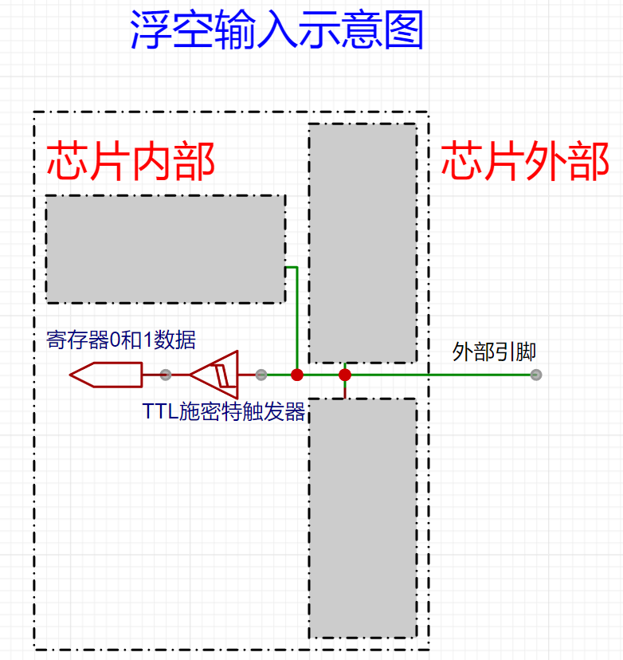</p><p data-lake-id="u3d06b28b" id="u3d06b28b"><span data-lake-id="u9c4aa326" id="u9c4aa326">浮空输入，就是将模拟信号，上拉，下拉全部断开。只接收外部电路的输入信号。</span></p><p data-lake-id="u454c7b33" id="u454c7b33"><span data-lake-id="udf6bb034" id="udf6bb034">这里会存在一个问题，如果外部没有输入信号，那么这个逻辑信号是未知的，不确定的。</span></p><h3 data-lake-id="kwywK" id="kwywK"><span data-lake-id="u962768c7" id="u962768c7">上拉输入</span></h3><p data-lake-id="u838466c1" id="u838466c1">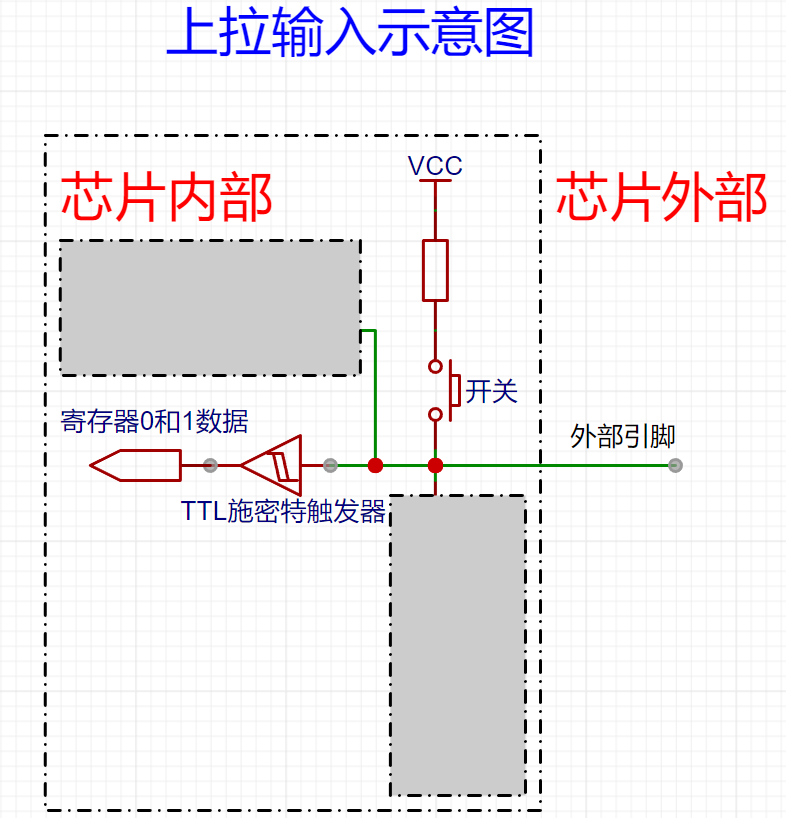</p><p data-lake-id="u96752058" id="u96752058"><span data-lake-id="ua828179b" id="ua828179b">上拉输入，就是将模拟信号，下拉全部断开，同时将上拉开关闭合。然后接收外部电路的输入信号。</span></p><p data-lake-id="u5ddcef50" id="u5ddcef50"><span data-lake-id="uc10611b8" id="uc10611b8">此时如果外部引脚不接任何VCC或GND，等同于接了空气（电阻无限大），那么测试引脚得到的电压也就等同于VCC，即起到了VCC上拉到高电平的作用。</span></p><p data-lake-id="u03f8aade" id="u03f8aade"><span data-lake-id="uadbe7dd4" id="uadbe7dd4">​</span><br/></p><p data-lake-id="u3c14c196" id="u3c14c196"><span data-lake-id="u7c097960" id="u7c097960">当外部输入高电平时，如下图：</span></p><p data-lake-id="u28b0d662" id="u28b0d662">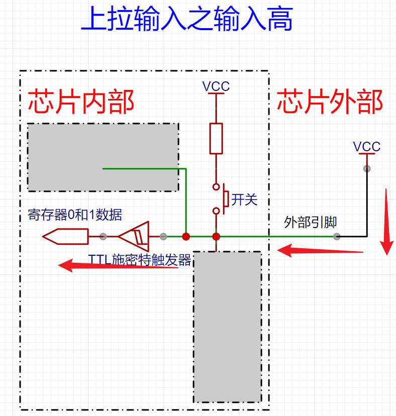</p><p data-lake-id="u8b649bda" id="u8b649bda"><span data-lake-id="u51842a8b" id="u51842a8b">当外部接入地时，如下图：</span></p><p data-lake-id="u160680dc" id="u160680dc">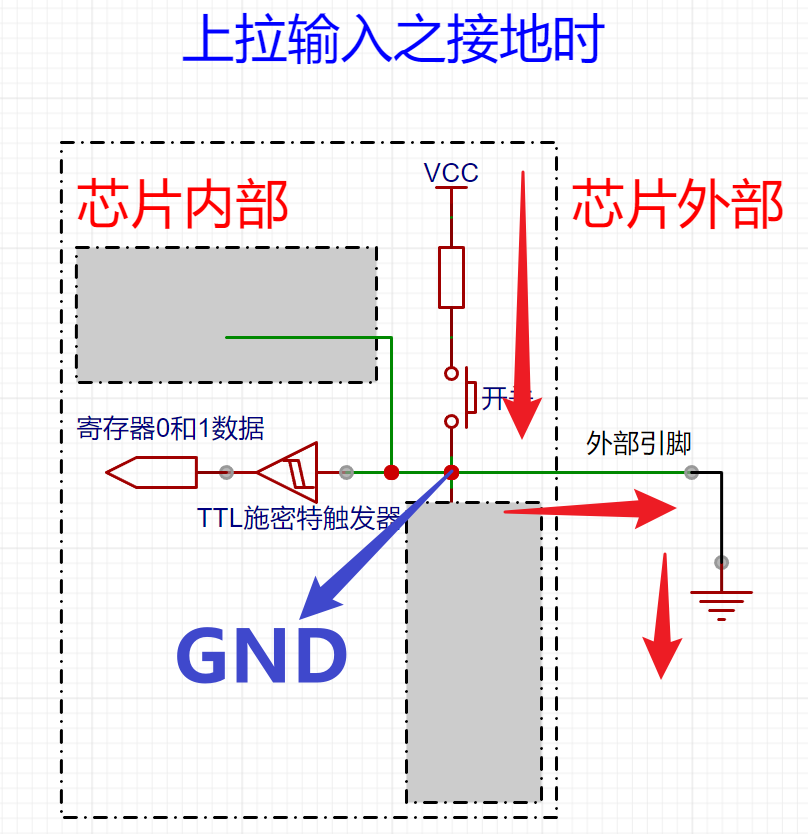</p><p data-lake-id="ub24db22d" id="ub24db22d"><span data-lake-id="uab0779b7" id="uab0779b7">上拉输入的一些总结：</span></p><p data-lake-id="uc0becc97" id="uc0becc97"><span data-lake-id="uac408b75" id="uac408b75">当输入信号未连接时，上拉电阻将确保输入信号保持在高电平状态，从而避免浮空输入。</span></p><p data-lake-id="u581a2592" id="u581a2592"><span data-lake-id="u651f5706" id="u651f5706">当外部信号连接到输入引脚时，外部信号为GND时，寄存器得到的电平也是低电平。</span></p><h3 data-lake-id="WQ7Mb" id="WQ7Mb"><span data-lake-id="ua178eb7f" id="ua178eb7f">下拉输入</span></h3><p data-lake-id="ub2c5a641" id="ub2c5a641">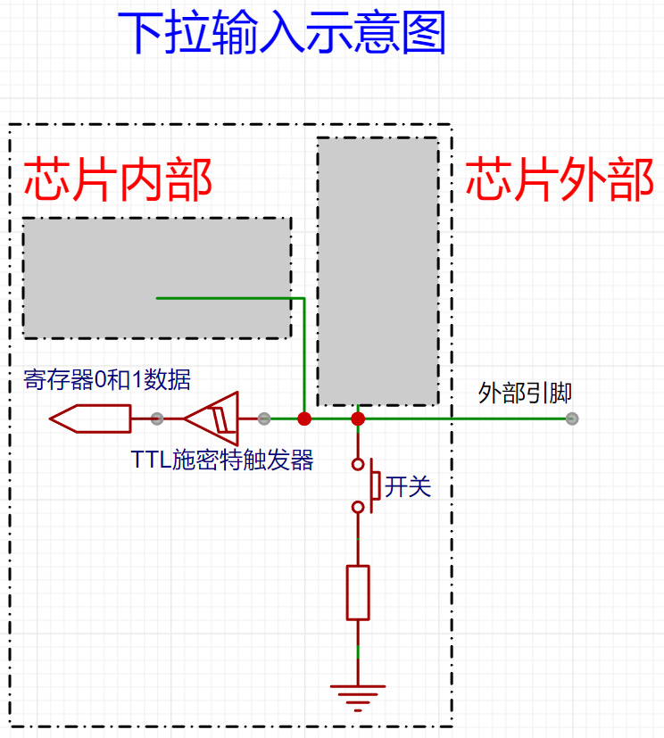</p><p data-lake-id="ude0a512e" id="ude0a512e"><span data-lake-id="u705caa0b" id="u705caa0b">下拉输入，就是将模拟信号，上拉全部断开，同时将下拉开关闭合。然后接收外部电路的输入信号。</span></p><p data-lake-id="u74731941" id="u74731941"><span data-lake-id="ue46e9170" id="ue46e9170">当外部输入高电平时，如下图：</span></p><p data-lake-id="uaac561c7" id="uaac561c7">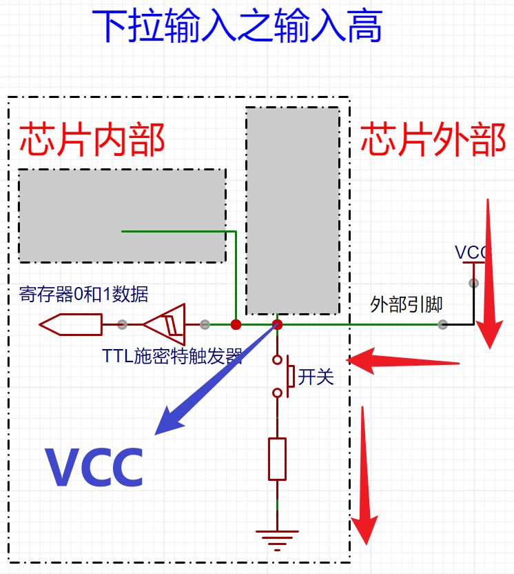</p><p data-lake-id="u69793677" id="u69793677"><span data-lake-id="u9bc000d8" id="u9bc000d8">当外部接入地时，如下图：</span></p><p data-lake-id="u7b7f8835" id="u7b7f8835">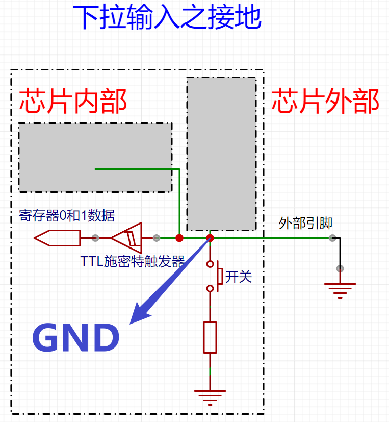</p><p data-lake-id="u7cdfab2e" id="u7cdfab2e"><span data-lake-id="u8ad8ab30" id="u8ad8ab30">下拉输入的一些总结：</span></p><p data-lake-id="u44505df1" id="u44505df1"><span data-lake-id="uf4079ad5" id="uf4079ad5">当输入信号未连接时，下拉电阻将确保输入信号保持在低电平状态，从而避免浮空输入。</span></p><p data-lake-id="ud452d645" id="ud452d645"><span data-lake-id="u6607db26" id="u6607db26">当外部信号连接到输入引脚时，外部信号可以拉高或拉低电平。</span></p><p data-lake-id="u417dc703" id="u417dc703"><br/></p><h3 data-lake-id="fsu2N" id="fsu2N"><span data-lake-id="u3c9aa5b7" id="u3c9aa5b7">模拟输入</span></h3><p data-lake-id="u78a2b3c1" id="u78a2b3c1">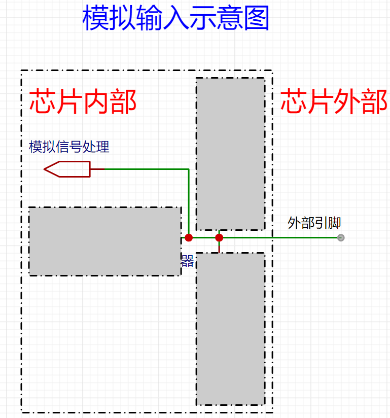</p><p data-lake-id="u10561505" id="u10561505"><span data-lake-id="u12ee85eb" id="u12ee85eb">模拟输入的内部结构如上图。</span></p><p data-lake-id="uf22bc888" id="uf22bc888"><span data-lake-id="ucadbf4ba" id="ucadbf4ba">在真实的物理世界中，我们外部输入的是电压值，这个属于模拟信号。其他的几种输入就是把模拟信号变为逻辑的0和1。通常输入的电压在1v以下我们认为是逻辑的0，1v以上是逻辑的1。（不同的芯片处理信号方式不同，这里简单的举例为1v上下）。</span></p><p data-lake-id="u722bf736" id="u722bf736"><span data-lake-id="u7c3ca3fc" id="u7c3ca3fc">模拟输入的是物理世界中的真实电压，模拟信号的处理不同与逻辑电路的转换，逻辑转换只有两种值。模拟信号则是线性的值，电压多大，就转换一个数字值，也就是将物理世界中的模拟数据转换为数字值，这个值是线性，有范围的。</span></p><h2 data-lake-id="M7tLl" id="M7tLl"><span data-lake-id="u95d5c144" id="u95d5c144">ARM系列GPIO</span></h2><p data-lake-id="u87560885" id="u87560885">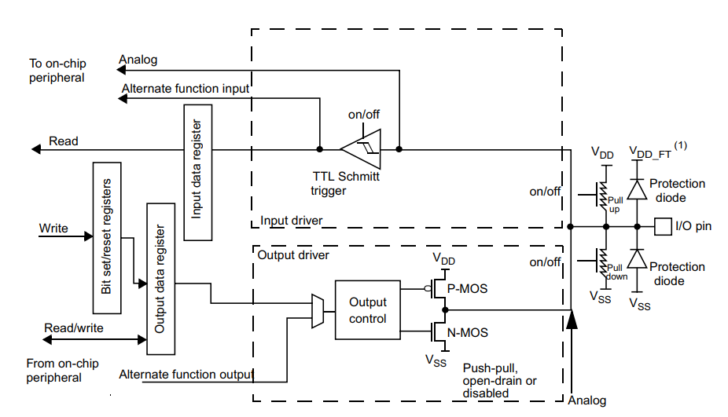</p><p data-lake-id="u3f8aef75" id="u3f8aef75"><span data-lake-id="ubc9461ec" id="ubc9461ec">以上为完整的结构图。</span></p><h3 data-lake-id="qAf0I" id="qAf0I"><span data-lake-id="ueb0cd780" id="ueb0cd780">寄存器</span></h3><p data-lake-id="ue961e9af" id="ue961e9af"><span data-lake-id="u44397b51" id="u44397b51">GPIO的寄存器大体上分为一下几种：</span></p><ol list="u35ae619a"><li data-lake-id="uac6785ef" fid="u8c0bac16" id="uac6785ef"><span data-lake-id="ue594fa64" id="ue594fa64">配置寄存器：配置输入输出，上拉下拉</span></li><li data-lake-id="u244fde98" fid="u8c0bac16" id="u244fde98"><span data-lake-id="u6afcb4ed" id="u6afcb4ed">数据寄存器：读取输入输出的状态</span></li><li data-lake-id="udc2d2a7d" fid="u8c0bac16" id="udc2d2a7d"><span data-lake-id="uba6216c3" id="uba6216c3">复位寄存器：输出高低电平</span></li><li data-lake-id="ud4723c45" fid="u8c0bac16" id="ud4723c45"><span data-lake-id="u85d83970" id="u85d83970">复用寄存器：配置复用功能</span></li></ol><h3 data-lake-id="ldmn9" id="ldmn9"><span data-lake-id="ufd825cc0" id="ufd825cc0">保护二极管</span></h3><p data-lake-id="u96de5b36" id="u96de5b36"><span data-lake-id="ub8fb4c8a" id="ub8fb4c8a">在线与，或者电压过大的情况下，将电压进行钳制，防止芯片烧毁。(当然这个是有限度的，得参考芯片手册内部的二极管特性)。</span></p><h3 data-lake-id="Fd7h2" id="Fd7h2"><span data-lake-id="u770a56aa" id="u770a56aa">GPIO工作模式</span></h3><table class="lake-table" data-lake-id="lMszJ" id="lMszJ" margin="true" style="width: 260px" width-mode="contain"><colgroup><col width="134"/><col width="126"/></colgroup><tbody><tr data-lake-id="u4cdb1461" id="u4cdb1461"><td data-lake-id="u1facdc17" id="u1facdc17" style="vertical-align: middle"><p data-lake-id="u70cd334b" id="u70cd334b" style="text-align: center"><strong><span class="lake-fontsize-14" data-lake-id="u56f984a5" id="u56f984a5">模式</span></strong></p></td><td data-lake-id="u95c4997d" id="u95c4997d" style="vertical-align: middle"><p data-lake-id="ueed84099" id="ueed84099" style="text-align: center"><strong><span class="lake-fontsize-14" data-lake-id="uca25948d" id="uca25948d">性质</span></strong></p></td></tr><tr data-lake-id="u6246258b" id="u6246258b"><td data-lake-id="ucc462640" id="ucc462640" style="vertical-align: middle"><p data-lake-id="u937b5759" id="u937b5759" style="text-align: center"><span data-lake-id="u121f1cb7" id="u121f1cb7">浮空输入</span></p></td><td data-lake-id="u55ccba20" id="u55ccba20" style="vertical-align: middle"><p data-lake-id="uc8b478ac" id="uc8b478ac" style="text-align: center"><span data-lake-id="u71009e88" id="u71009e88">数字输入</span></p></td></tr><tr data-lake-id="u0f8b1f9f" id="u0f8b1f9f"><td data-lake-id="u4456213f" id="u4456213f" style="vertical-align: middle"><p data-lake-id="u403664de" id="u403664de" style="text-align: center"><strong><span data-lake-id="u3ebae84e" id="u3ebae84e" style="color: #DF2A3F">上拉输入</span></strong></p></td><td data-lake-id="u2038b15a" id="u2038b15a" style="vertical-align: middle"><p data-lake-id="u4c5937cc" id="u4c5937cc" style="text-align: center"><strong><span data-lake-id="u62bac92b" id="u62bac92b" style="color: #DF2A3F">数字输入</span></strong></p></td></tr><tr data-lake-id="u68ac82e1" id="u68ac82e1"><td data-lake-id="u07befa86" id="u07befa86" style="vertical-align: middle"><p data-lake-id="u91faa6e1" id="u91faa6e1" style="text-align: center"><strong><span data-lake-id="u13757fb3" id="u13757fb3" style="color: #DF2A3F">下拉输入</span></strong></p></td><td data-lake-id="u64a341bb" id="u64a341bb" style="vertical-align: middle"><p data-lake-id="ua2d27371" id="ua2d27371" style="text-align: center"><strong><span data-lake-id="u4e75d0a0" id="u4e75d0a0" style="color: #DF2A3F">数字输入</span></strong></p></td></tr><tr data-lake-id="u11a11b03" id="u11a11b03"><td data-lake-id="u2d03cea1" id="u2d03cea1" style="vertical-align: middle"><p data-lake-id="u809b22bf" id="u809b22bf" style="text-align: center"><span data-lake-id="u660733c4" id="u660733c4">模拟输入</span></p></td><td data-lake-id="u7c05aae9" id="u7c05aae9" style="vertical-align: middle"><p data-lake-id="ud4f49145" id="ud4f49145" style="text-align: center"><span data-lake-id="u5aeca818" id="u5aeca818">模拟输入</span></p></td></tr><tr data-lake-id="u1688113b" id="u1688113b"><td data-lake-id="ua09f197a" id="ua09f197a" style="vertical-align: middle"><p data-lake-id="u5c3759fa" id="u5c3759fa" style="text-align: center"><strong><span data-lake-id="u1ecbac23" id="u1ecbac23" style="color: #DF2A3F">开漏输出</span></strong></p></td><td data-lake-id="ue6dd9084" id="ue6dd9084" style="vertical-align: middle"><p data-lake-id="u58c98018" id="u58c98018" style="text-align: center"><strong><span data-lake-id="uc92a97ca" id="uc92a97ca" style="color: #DF2A3F">数字输出</span></strong></p></td></tr><tr data-lake-id="u2e627977" id="u2e627977"><td data-lake-id="u49fdad48" id="u49fdad48" style="vertical-align: middle"><p data-lake-id="ua64e201e" id="ua64e201e" style="text-align: center"><strong><span data-lake-id="u161d191f" id="u161d191f" style="color: #DF2A3F">推挽输出</span></strong></p></td><td data-lake-id="u8b26a73f" id="u8b26a73f" style="vertical-align: middle"><p data-lake-id="u07c90202" id="u07c90202" style="text-align: center"><strong><span data-lake-id="u3864f5f1" id="u3864f5f1" style="color: #DF2A3F">数字输出</span></strong></p></td></tr><tr data-lake-id="uf1f3b078" id="uf1f3b078"><td data-lake-id="u1e58f64b" id="u1e58f64b" style="vertical-align: middle"><p data-lake-id="u339d1c4c" id="u339d1c4c" style="text-align: center"><span data-lake-id="u28104786" id="u28104786">复用开漏输出</span></p></td><td data-lake-id="u8bd71180" id="u8bd71180" style="vertical-align: middle"><p data-lake-id="ue5cc2209" id="ue5cc2209" style="text-align: center"><span data-lake-id="ub3204bba" id="ub3204bba">数字输出</span></p></td></tr><tr data-lake-id="u63a3b4f6" id="u63a3b4f6"><td data-lake-id="u4f1031ee" id="u4f1031ee" style="vertical-align: middle"><p data-lake-id="u141e0ef4" id="u141e0ef4" style="text-align: center"><span data-lake-id="uefb77ec1" id="uefb77ec1">复用推挽输出</span></p></td><td data-lake-id="u0183bfba" id="u0183bfba" style="vertical-align: middle"><p data-lake-id="u6c01cf18" id="u6c01cf18" style="text-align: center"><span data-lake-id="uafa6c5f9" id="uafa6c5f9">数字输出</span></p></td></tr></tbody></table><h2 data-lake-id="eLfbp" id="eLfbp"><span data-lake-id="u4bc704f8" id="u4bc704f8">GD32/STM32系列GPIO工作模式</span></h2><h3 data-lake-id="Tpj2C" id="Tpj2C"><span data-lake-id="u9996d859" id="u9996d859">浮空输入</span></h3><p data-lake-id="u5c29a6c8" id="u5c29a6c8">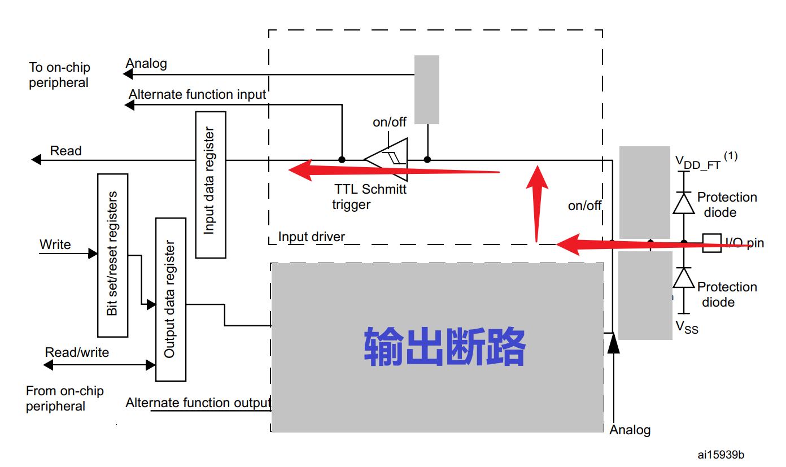</p><span class="yuque-card-unsupported">[codeblock]</span><ul list="u5116ae34"><li data-lake-id="ud61761a9" fid="ua5df8b9f" id="ud61761a9"><span data-lake-id="udb81124f" id="udb81124f">RCU_GPIOx: 具体是哪个端口。（A,B,C,D,E,F,G,H,I）</span></li><li data-lake-id="uc9e9d494" fid="ua5df8b9f" id="uc9e9d494"><span data-lake-id="u7d4ec66c" id="u7d4ec66c">GPIOx: 具体是哪个端口。（A,B,C,D,E,F,G,H,I）</span></li><li data-lake-id="uc075a383" fid="ua5df8b9f" id="uc075a383"><span data-lake-id="u2cdfe048" id="u2cdfe048">GPIO_PIN_x：具体是哪个引脚。(0~15)</span></li></ul><h3 data-lake-id="ekvLh" id="ekvLh"><span data-lake-id="ue5e13276" id="ue5e13276">上拉输入</span></h3><p data-lake-id="u6960aa50" id="u6960aa50">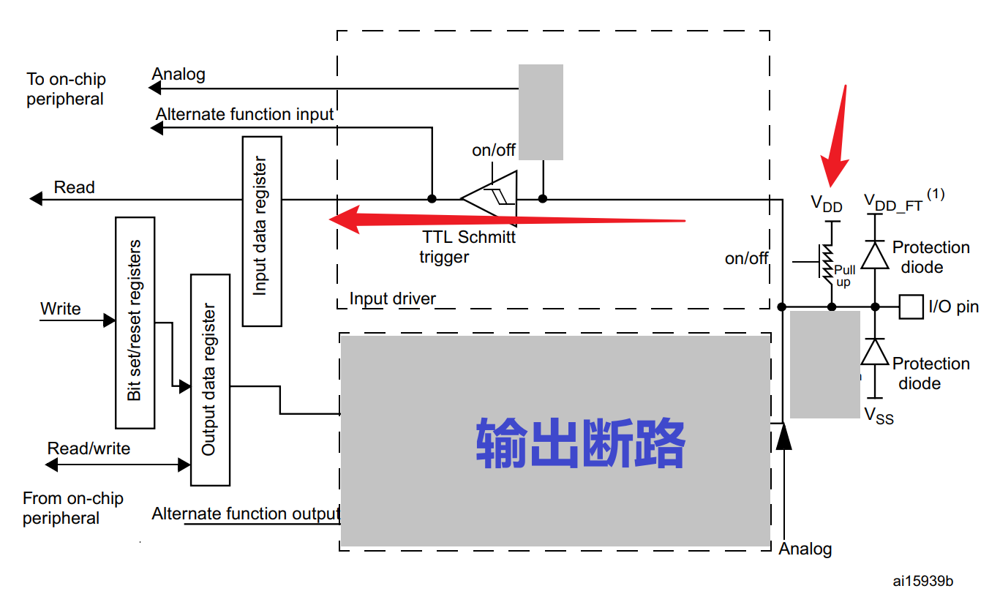</p><span class="yuque-card-unsupported">[codeblock]</span><ul list="u17c2e72d"><li data-lake-id="u24aef35d" fid="ua5df8b9f" id="u24aef35d"><span data-lake-id="ub05bc2f0" id="ub05bc2f0">RCU_GPIOx: 具体是哪个端口。（A,B,C,D,E,F,G,H,I）</span></li><li data-lake-id="udf9adcc3" fid="ua5df8b9f" id="udf9adcc3"><span data-lake-id="ub40b18f4" id="ub40b18f4">GPIOx: 具体是哪个端口。（A,B,C,D,E,F,G,H,I）</span></li><li data-lake-id="u34d829da" fid="ua5df8b9f" id="u34d829da"><span data-lake-id="u24a0ed0b" id="u24a0ed0b">GPIO_PIN_x：具体是哪个引脚。(0~15)</span></li></ul><h3 data-lake-id="kxsdQ" id="kxsdQ"><span data-lake-id="uc0f8c0c2" id="uc0f8c0c2">下拉输入</span></h3><p data-lake-id="ua4a13aba" id="ua4a13aba">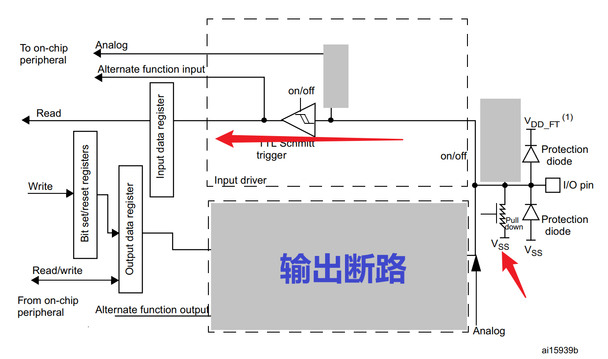</p><span class="yuque-card-unsupported">[codeblock]</span><ul list="ua2e5e487"><li data-lake-id="u6e5bcbb1" fid="ua5df8b9f" id="u6e5bcbb1"><span data-lake-id="u0cb4bed9" id="u0cb4bed9">RCU_GPIOx: 具体是哪个端口。（A,B,C,D,E,F,G,H,I）</span></li><li data-lake-id="ub31b9825" fid="ua5df8b9f" id="ub31b9825"><span data-lake-id="ueb76b39b" id="ueb76b39b">GPIOx: 具体是哪个端口。（A,B,C,D,E,F,G,H,I）</span></li><li data-lake-id="u5bb8dc1c" fid="ua5df8b9f" id="u5bb8dc1c"><span data-lake-id="u85105f5d" id="u85105f5d">GPIO_PIN_x：具体是哪个引脚。(0~15)</span></li></ul><h3 data-lake-id="hTjFr" id="hTjFr"><span data-lake-id="ub82ce07c" id="ub82ce07c">模拟输入</span></h3><p data-lake-id="u2af292ae" id="u2af292ae">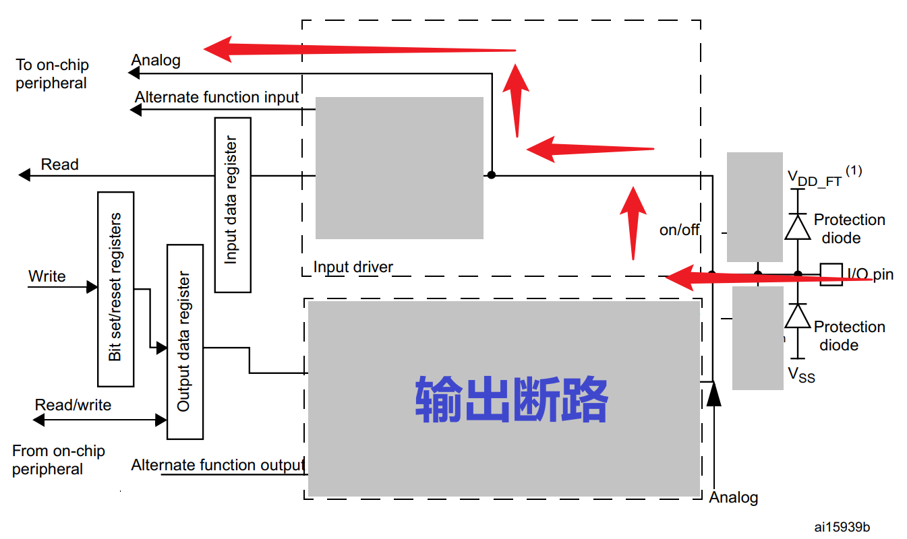</p><span class="yuque-card-unsupported">[codeblock]</span><ul list="u7bec14f8"><li data-lake-id="u9f228946" fid="ua5df8b9f" id="u9f228946"><span data-lake-id="ub5f8d1a5" id="ub5f8d1a5">RCU_GPIOx: 具体是哪个端口。（A,B,C,D,E,F,G,H,I）</span></li><li data-lake-id="u3fa73f4a" fid="ua5df8b9f" id="u3fa73f4a"><span data-lake-id="udba69eb7" id="udba69eb7">GPIOx: 具体是哪个端口。（A,B,C,D,E,F,G,H,I）</span></li><li data-lake-id="u51339c56" fid="ua5df8b9f" id="u51339c56"><span data-lake-id="u66d06d7a" id="u66d06d7a">GPIO_PIN_x：具体是哪个引脚。(0~15)</span></li></ul><h3 data-lake-id="qdQZj" id="qdQZj"><span data-lake-id="u6092e7a0" id="u6092e7a0">推挽输出</span></h3><p data-lake-id="ud0c2c308" id="ud0c2c308">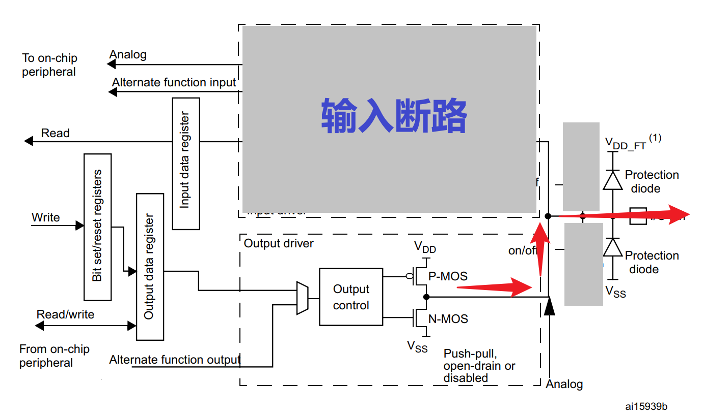</p><span class="yuque-card-unsupported">[codeblock]</span><ul list="ub0f0f9ac"><li data-lake-id="ufe6c0e02" fid="ua5df8b9f" id="ufe6c0e02"><span data-lake-id="u47bad6fd" id="u47bad6fd">RCU_GPIOx: 具体是哪个端口。（A,B,C,D,E,F,G,H,I）</span></li><li data-lake-id="uf6596bba" fid="ua5df8b9f" id="uf6596bba"><span data-lake-id="uaff216fe" id="uaff216fe">GPIOx: 具体是哪个端口。（A,B,C,D,E,F,G,H,I）</span></li><li data-lake-id="u8fcfbfb7" fid="ua5df8b9f" id="u8fcfbfb7"><span data-lake-id="u522a5fe1" id="u522a5fe1">GPIO_PIN_x：具体是哪个引脚。(0~15)</span></li></ul><h3 data-lake-id="fovEI" id="fovEI"><span data-lake-id="uc01a6597" id="uc01a6597">开漏输出</span></h3><p data-lake-id="u8e1b7452" id="u8e1b7452">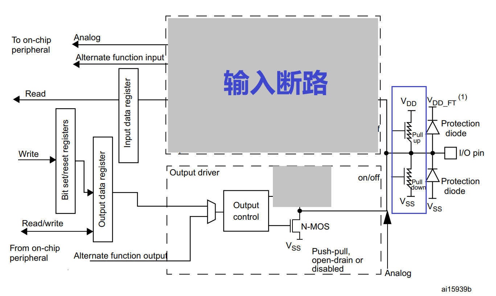</p><span class="yuque-card-unsupported">[codeblock]</span><ul list="u5cfe845e"><li data-lake-id="u41ed545d" fid="ua5df8b9f" id="u41ed545d"><span data-lake-id="u734e8b30" id="u734e8b30">RCU_GPIOx: 具体是哪个端口。（A,B,C,D,E,F,G,H,I）</span></li><li data-lake-id="u8b4c86c3" fid="ua5df8b9f" id="u8b4c86c3"><span data-lake-id="u78881fc6" id="u78881fc6">GPIOx: 具体是哪个端口。（A,B,C,D,E,F,G,H,I）</span></li><li data-lake-id="u8bf26414" fid="ua5df8b9f" id="u8bf26414"><span data-lake-id="uc65fe61b" id="uc65fe61b">GPIO_PIN_x：具体是哪个引脚。(0~15)</span></li></ul><p data-lake-id="u605b623c" id="u605b623c"><span data-lake-id="ud46d31dc" id="ud46d31dc">通常开漏时，需要外部上拉，当然内部电路也可以控制上拉。</span></p><h3 data-lake-id="WmD6p" id="WmD6p"><span data-lake-id="u67b98d6a" id="u67b98d6a">复用推挽输出</span></h3><p data-lake-id="ue4ab2d8b" id="ue4ab2d8b">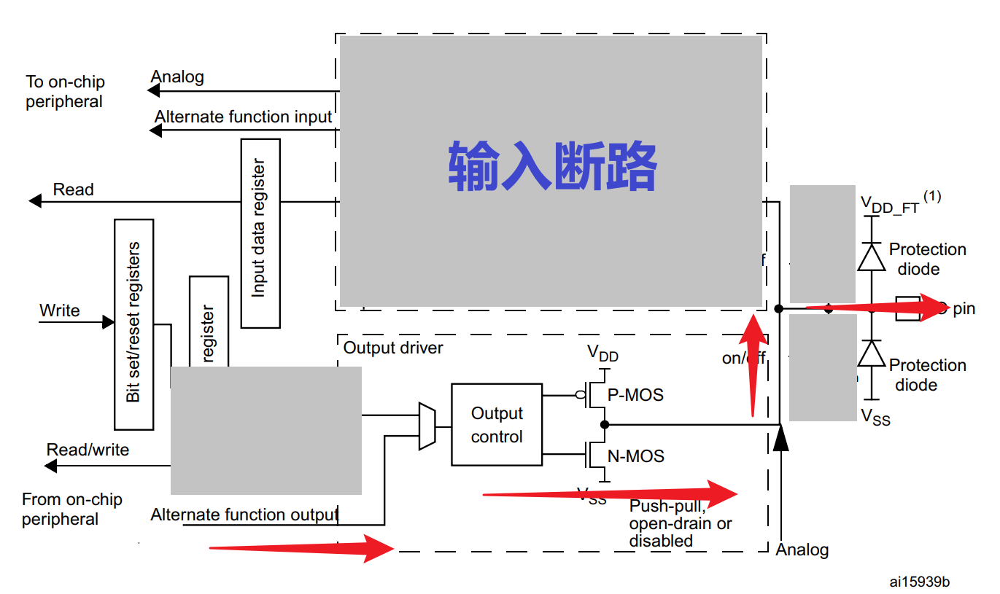</p><span class="yuque-card-unsupported">[codeblock]</span><ul list="ud01481dd"><li data-lake-id="u305a44c5" fid="ua5df8b9f" id="u305a44c5"><span data-lake-id="u50b96650" id="u50b96650">RCU_GPIOx: 具体是哪个端口。（A,B,C,D,E,F,G,H,I）</span></li><li data-lake-id="u2e8b115b" fid="ua5df8b9f" id="u2e8b115b"><span data-lake-id="uaba4000c" id="uaba4000c">GPIOx: 具体是哪个端口。（A,B,C,D,E,F,G,H,I）</span></li><li data-lake-id="u96943e8d" fid="ua5df8b9f" id="u96943e8d"><span data-lake-id="uf099016b" id="uf099016b">GPIO_PIN_x：具体是哪个引脚。(0~15)</span></li><li data-lake-id="ub6507b46" fid="ua5df8b9f" id="ub6507b46"><span data-lake-id="u0bd1fe76" id="u0bd1fe76">GPIO_AF_x：具体复用什么功能。(0-15)</span></li></ul><h3 data-lake-id="q8CnU" id="q8CnU"><span data-lake-id="u864f3eb3" id="u864f3eb3">复用开漏输出</span></h3><p data-lake-id="u929437f6" id="u929437f6">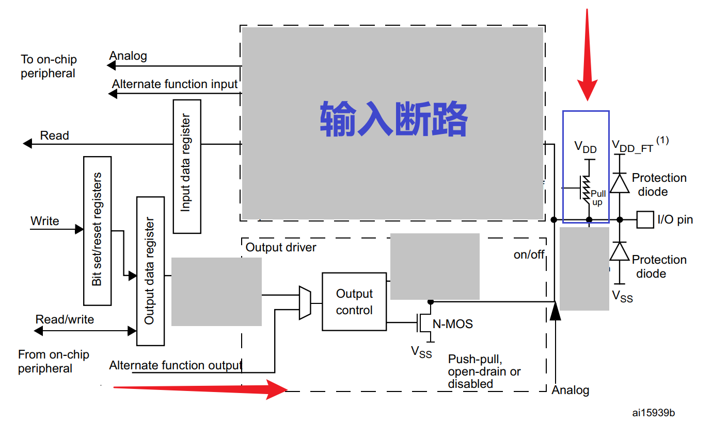</p><span class="yuque-card-unsupported">[codeblock]</span><ul list="u102215ac"><li data-lake-id="u9c40cd20" fid="ua5df8b9f" id="u9c40cd20"><span data-lake-id="u98ef9300" id="u98ef9300">RCU_GPIOx: 具体是哪个端口。（A,B,C,D,E,F,G,H,I）</span></li><li data-lake-id="u84095baa" fid="ua5df8b9f" id="u84095baa"><span data-lake-id="u0568c952" id="u0568c952">GPIOx: 具体是哪个端口。（A,B,C,D,E,F,G,H,I）</span></li><li data-lake-id="ufc773591" fid="ua5df8b9f" id="ufc773591"><span data-lake-id="u75ad4a02" id="u75ad4a02">GPIO_PIN_x：具体是哪个引脚。(0~15)</span></li><li data-lake-id="uce2a8ffe" fid="ua5df8b9f" id="uce2a8ffe"><span data-lake-id="u40a65c9c" id="u40a65c9c">GPIO_AF_x：具体复用什么功能。(0-15)</span></li></ul><p data-lake-id="u3bb461b2" id="u3bb461b2"><span data-lake-id="u69d7f15e" id="u69d7f15e">通常开漏时，需要外部上拉，当然内部电路也可以控制上拉。</span></p><p data-lake-id="u4c2edbc1" id="u4c2edbc1"><span data-lake-id="u8e243a12" id="u8e243a12">​</span><br/></p><p data-lake-id="uc7211ca1" id="uc7211ca1"><span data-lake-id="ueeacac75" id="ueeacac75">​</span><br/></p><h2 data-lake-id="U3Tv0" id="U3Tv0"><span data-lake-id="ua5ba0856" id="ua5ba0856">附录(了解)</span></h2><p data-lake-id="ufa74656d" id="ufa74656d"><br/></p><p data-lake-id="u5e12c842" id="u5e12c842">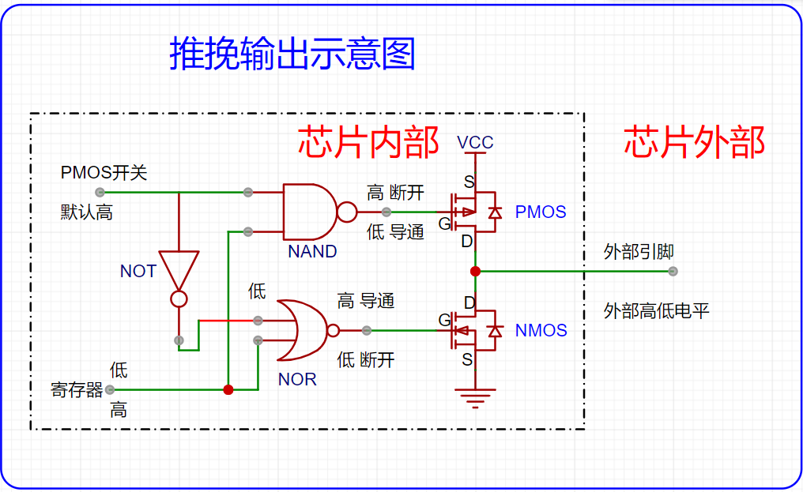</p><p data-lake-id="u7d29531d" id="u7d29531d">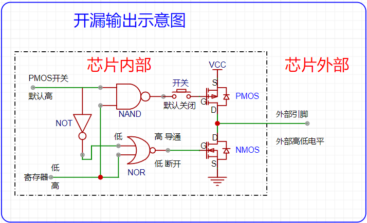</p><p data-lake-id="udeaddc1b" id="udeaddc1b">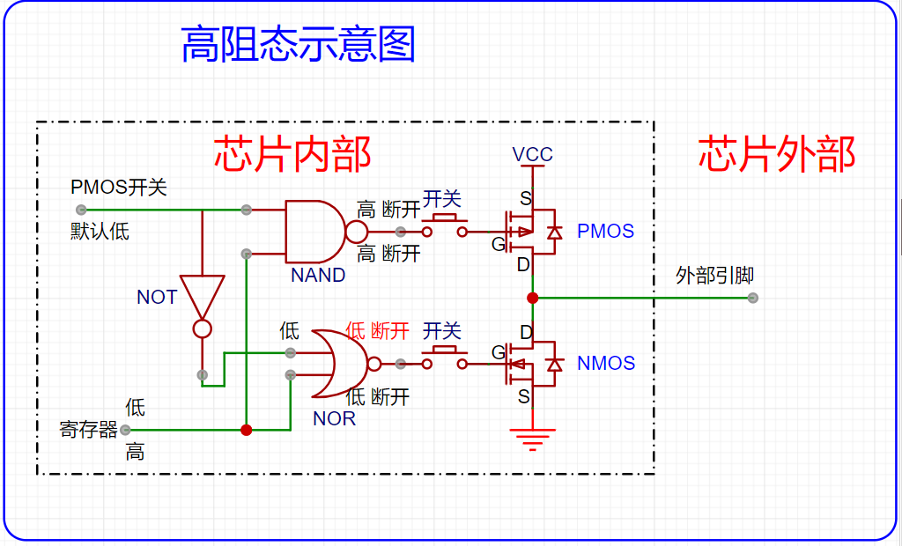</p><p data-lake-id="uaabb5e1b" id="uaabb5e1b">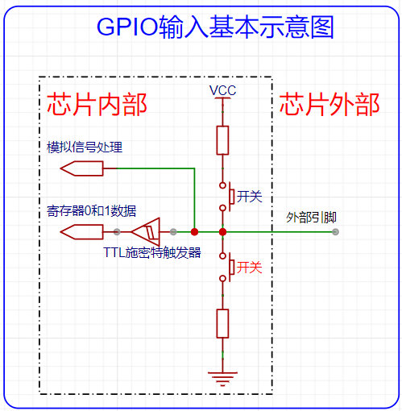</p><h1 data-lake-id="HDLz3" id="HDLz3"><span data-lake-id="u319855c3" id="u319855c3">练习题</span></h1><ol list="ud716c488"><li data-lake-id="u2fb8f8ff" fid="u7b7c1eaa" id="u2fb8f8ff"><span data-lake-id="u5aa39b91" id="u5aa39b91">实现多种输出模式下的点灯，体会输出模式。</span></li><li data-lake-id="u42160681" fid="u7b7c1eaa" id="u42160681"><span data-lake-id="uf822a289" id="uf822a289">实现按键输入，测试输入模式。</span></li></ol>